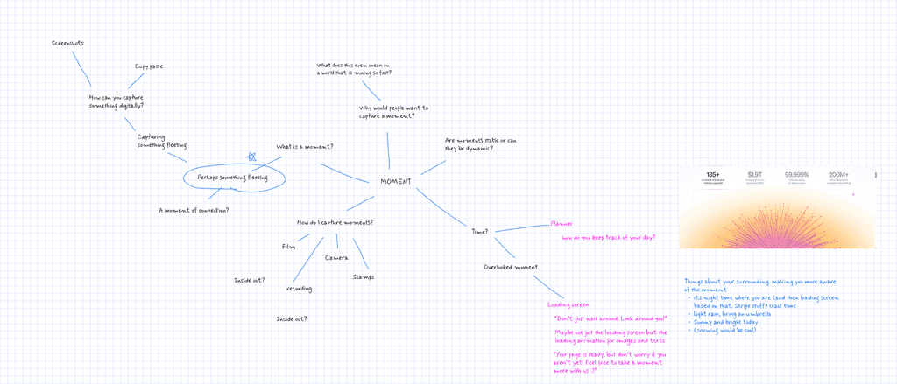

The Dial
Open Doors x Framer Student Challenge
Context
A competition submission that turned into something much more
1st place submission for the first Open Doors x Framer Challenge revolved around the theme moments. We had a month to create any interaction on Framer that fit the theme. Rather than focusing on one interaction, I wanted to create an entire experience.
THE PROMPT
MOMENTS: Express or capture one or multiple moments through an interaction
When I came across the moment, I thought to myself: how can I create something that express a moment by taking advantage of the unique advantages provided by working on a digital medium?
Inspired by Stripe's landing page, I wanted my interaction to be able to alter the moment as much as it can express it, and turning daytime into nighttime is something that is only possible on a digital screen.

THE DETAILS✨
I wanted the daytime and nighttime interactions to feel completely different, but the small details are what separates the two. Switching between light mode and dark mode shouldn't just be a change in color; it should signify immersing the viewer in two different worlds, hence creating a moment in and of itself.
Daytime
Night Time
MICRO-INTERACTION GALLERY
Icon switching animation
Custom AnimationCloud for day, shooting star for night
Dial Rotation
Text ChangeP.S. the text will change every hour depending on the time of day it is
EXPLAINING THE PROCESS
The product is important, but so is the process
I made sure to include not just the interaction, but also the process on the website itself. Understanding the thought process, iterations, and explorations that went on under the cover is so important regardless of what you are designing: from a full-scale application down to a button.
In addition, the pop-up became an extension of the surface that allows the user another way to experience the interaction.
If you are curious, you can read about the process yourself on the website!
REFLECTIONS
If I had more time: add sound🔊
Thank you so much to Florian and the Framer team for a wonderful experience. Working on this was a gradual process, with a lot of planning and continuously refining it over the course of a month.
If I had more time, I would love to explore sound design to make it a more comprehensive experience. Design is moving away fast from static screens into a whole experience that can touch different senses rather than just visual ones. I'm excited to keep exploring that direction as design continues to evolve.
Thanks for reading!
Want to learn more? Curious about the details? Feel free to reach out to me at